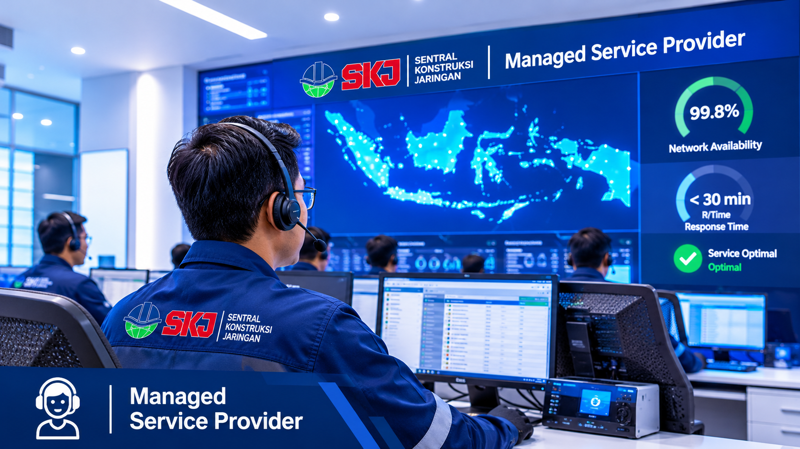
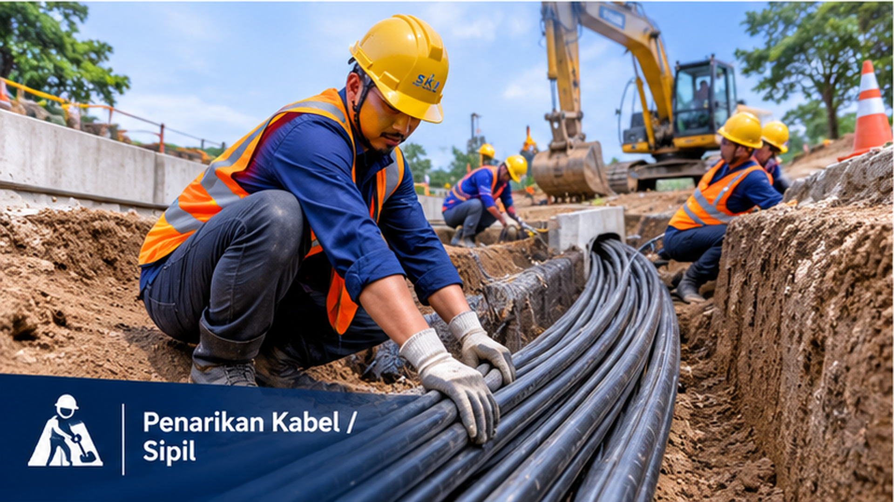
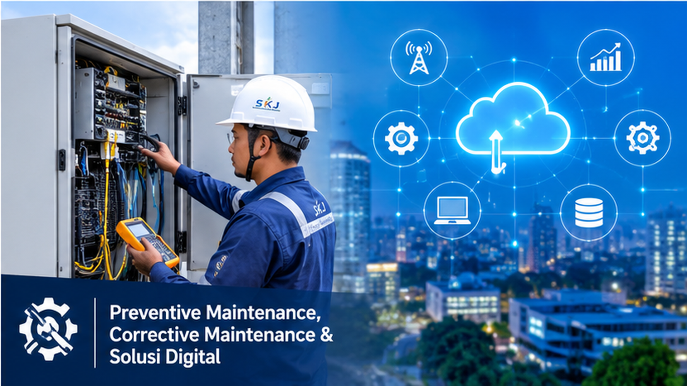

Menghadirkan layanan end-to-end mulai dari Managed Service, Konstruksi Jaringan, Infrastruktur Fiber Optic, hingga Solusi Digital handal untuk kebutuhan bisnis Anda.

Pengelolaan Infrastruktur Telekomunikasi 24/7
High Standard & Safety
Standar keselamatan kerja tinggi serta kepatuhan penuh terhadap SLA proyek klien.
Integrated Connectivity
Solusi end-to-end dari konstruksi sipil fiber optic hingga pengelolaan jaringan server.
24/7 Expert Support
Dukungan tim teknisi berpengalaman siap siaga untuk pemeliharaan preventif & korektif.
Tentang PT Sentral Konstruksi Jaringan
PT. Sentral Konstruksi Jaringan (SKJ) adalah perusahaan nasional terdepan di bidang konstruksi jaringan internet, telekomunikasi, dan solusi digital yang berkomitmen menghadirkan infrastruktur andal, modern, serta merata di seluruh Indonesia. Melalui layanan Managed Service Provider (MSP) serta keahlian konstruksi sipil jaringan telekomunikasi dan fiber optik, SKJ siap memberikan solusi terbaik yang berorientasi pada kualitas, efisiensi, dan keberlanjutan digitalisasi.
Visi & Misi
Kami berkomitmen menjadi perusahaan terdepan dan terpercaya di Indonesia dalam bidang konstruksi jaringan internet, telekomunikasi, dan infrastruktur digital dengan menyediakan layanan yang inovatif, terintegrasi, serta ramah lingkungan. Sebagai mitra strategis bagi seluruh pemangku kepentingan, kami berupaya mendukung pemerataan akses internet yang cepat, stabil, dan terjangkau hingga ke pelosok negeri, sekaligus memperkuat kompetensi sumber daya manusia guna menghadapi tantangan industri teknologi informasi melalui kolaborasi digital.
Tim Profesional & Alat Memadai
Didukung oleh tenaga ahli berpengalaman dan integrasi teknologi peralatan terkini, kami memastikan setiap pekerjaan pembangunan infrastruktur berjalan dengan presisi tinggi. Kami menerapkan standar kerja yang ketat serta pemanfaatan perangkat modern guna mengoptimalkan efisiensi di lapangan. Hal ini menjamin bahwa setiap proyek konstruksi jaringan yang kami kerjakan mampu memberikan ketahanan jangka panjang dan performa sistem yang dapat diandalkan secara maksimal.
Kepatuhan & Komitmen
Kami berkomitmen untuk menjaga transparansi, integritas, dan profesionalisme tinggi dalam setiap proyek pembangunan infrastruktur digital. Seluruh proses pelaksanaan dikelola secara disiplin untuk memastikan pemenuhan standar SLA (Service Level Agreement) serta regulasi industri yang berlaku. Dengan pendekatan ini, kami tidak hanya menghadirkan hasil yang optimal dan efisien, tetapi juga membangun hubungan kemitraan yang berkelanjutan dan saling percaya dengan seluruh pemangku kepentingan.
Produk & Layanan Kami
Solusi profesional mencakup managed service, konstruksi sipil, pemeliharaan site, hingga solusi digital terintegrasi.
Managed Service Provider
Menyediakan layanan pengelolaan dan pemeliharaan infrastruktur telekomunikasi, jaringan fiber optic (OSP) dan fasilitas Civil, Mechanical & Electrical (CME) termasuk pemeliharaan TRAFO & CUBICLE, serta Infrastruktur Digital (IT), guna memastikan operasional berjalan optimal, stabil, dan berkelanjutan.
Konstruksi Sipil

Kami menyediakan layanan konstruksi sipil yang terintegrasi, meliputi pekerjaan galian (trenching) dan open pit untuk mendukung pembangunan jaringan fiber optic dan infrastruktur telekomunikasi lainnya. Didukung oleh tenaga kerja berpengalaman dan peralatan yang memadai, kami berkomitmen menghadirkan hasil pekerjaan yang presisi, aman, serta tepat waktu.
PM & CM Site

- Preventive Maintenance: inspeksi berkala, pengecekan perangkat, pembersihan, pengujian fungsi, dan dokumentasi kondisi site
- Corrective Maintenance: troubleshooting, perbaikan gangguan jaringan/perangkat, penggantian komponen, dan pemulihan layanan
- Monitoring & Reporting: pelaporan berkala, SLA compliance, dan analisa performa site
Digital Solution (by Solution Exa Digital)

Sebagai penyedia solusi teknologi terintegrasi, kami menghadirkan layanan Pengembangan Aplikasi/Web Enterprise, Mobile, dan Otomasi Bisnis yang andal. Kami fokus pada teknologi terbarukan dan adaptif untuk meningkatkan produktivitas serta pertumbuhan bisnis Anda di era digital.
Artikel & Wawasan
Informasi terbaru seputar dunia konstruksi jaringan, telekomunikasi, dan infrastruktur.

Peran Vital Managed Service dalam Stabilitas Jaringan Telekomunikasi
Menjaga keandalan jaringan melalui pemeliharaan preventif dan korektif secara berkala oleh teknisi ahli SKJ.
Teknik Trenching dan Open Pit yang Aman untuk Fiber Optic
Standar pengerjaan galian tanah yang presisi dan aman guna mendukung suksesnya instalasi kabel jaringan bawah tanah.
Integrasi Perangkat Listrik Trafo & Cubicle pada Site Telekomunikasi
Menjaga kestabilan pasokan daya listrik site melalui pemeliharaan fasilitas Civil, Mechanical & Electrical (CME).
Hubungi Kami
Konsultasikan kebutuhan proyek konstruksi jaringan dan infrastruktur telekomunikasi serta digital Anda bersama SKJ.
Kantor Batam (Pusat / Workshop)
Kavling Bukit Kamboja Dapur 12 Blok EE No 12A, Kec. Sagulung, Kota Batam, Kepulauan Riau 29472
Kantor Jabodetabek
Area Layanan & Perwakilan Operasional Jabodetabek, Indonesia
admin@sentralkonstruksi.net